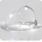

01 · PRODUCT
동백의 생기와
다시마의 수분을 한 통에
카멜리아씨오일, 동백나무꽃, 다시마 추출물을 담아 피부를 촉촉하고 편안하게 가꿔주는 앰플 크림입니다.
- 용량
- 100g / 3.52oz
- 피부 타입
- 모든 피부
- 기능성
- 미백 · 주름개선
YEOSU CAMELLIA · CHUNGJUNG
여수의 바닷바람을 견딘 생기를 피부에
Chapter 01 · Ampoule Cream
식약처 기능성 2가지를 담은 청정 동백다시마 앰플크림
01 · PRODUCT
카멜리아씨오일, 동백나무꽃, 다시마 추출물을 담아 피부를 촉촉하고 편안하게 가꿔주는 앰플 크림입니다.
02 · TEXTURE
03 · FUNCTION
피부 톤을 맑고 균일하게, 피부 미백에 도움
피부의 주름 개선에 도움
04 · DAILY
스킨케어 마지막 단계에 적당량을 덜어 얼굴 전체에 부드럽게 펴 발라 주세요. 촉촉함이 오래 머무는 피부결을 느껴보세요.
성분 설명은 원료 특성에 한합니다.

스쿠알란 · 알란토인촉촉한 보습과 진정Chapter 02 · Camellia Oil
원료는 단 하나, 동백나무씨오일 — 청정 천연 동백오일
01 · PRODUCT
향료도, 다른 오일도 섞지 않았습니다. 동백씨 오일 그대로의 보습감을 얼굴과 몸, 머리까지 담아보세요.
02 · HOW TO USE
얼굴, 팔다리, 발꿈치처럼 건조한 부위에
거칠어지기 쉬운 손끝과 손발톱 주변에
샴푸 후 모발 끝에 적당량, 또는 두피 마사지
03 · CRAFT
Review
Information
| 제품명 | 청정 동백다시마 앰플크림 |
|---|---|
| 용량 | 100g / 3.52oz |
| 기능성 | 미백 · 주름개선 2중 기능성 화장품 |
| 피부 타입 | 모든 피부 |
| 제조국 | 대한민국 |
| 사용기한 | 제품 패키지에 별도 표기 |
정제수, 글리세린, 미네랄오일, 카프릴릭/카프릭트라이글리세라이드, 프로필렌글라이콜, 나이아신아마이드, 카멜리아씨오일(20,000ppm), 세테아릴알코올, 폴리솔베이트60, 팔미틱애씨드, 스테아릭애씨드, 글리세릴스테아레이트, 다이메티콘, 스쿠알란, 페녹시에탄올, 피이지-100스테아레이트, 솔비탄세스퀴올리에이트, 파라핀, 하이드로제네이티드C12-18트라이글리세라이드, 마이크로크리스탈린왁스, 카보머, 트라이에탄올아민, 세라알마, 알란토인, 아데노신, 다이소듐이디티에이, 다이프로필렌글라이콜, 토코페릴아세테이트, 부틸렌글라이콜, 1,2-헥산다이올, 황색4호, 녹차추출물, 병풀추출물, 다시마추출물(2ppm), 동백나무꽃추출물(2ppm), 클로렐라불가리스추출물, 청색1호, 향료, 리모넨, 벤질벤조에이트
| 제품명 | 청정 천연동백오일 |
|---|---|
| 용량 | 30ml / 1.01 fl.oz |
| 전성분 | 동백나무씨오일 100% |
| 사용기한 | 제품 패키지에 별도 표기 |
| 제조국 | 대한민국 |
| 화장품 제조업자 | (주)이노보떼 · 인천시 남동구 남동서로144번길 42 |
| 화장품책임판매업자 | (주)한국자이화장품 · 서울시 강서구 국회대로 151 (주)청정 · 전라남도 여수시 |
| 사용방법 | 세안 후 물기를 닦고 적당량을 손에 덜어 원하는 부위에 골고루 바릅니다. |
네. 크림을 먼저 바른 뒤 오일 1~2방울을 덧바르거나, 손바닥에서 크림과 오일을 섞어 바르면 보습감이 더 오래 유지됩니다.
샴푸 후 물기를 가볍게 말린 모발 끝에 적당량을 바르거나, 두피 마사지에 사용할 수 있습니다. 양이 많으면 무거워 보일 수 있으니 조금씩 늘려 주세요.
제품에 이상이 있는 경우 공정거래위원회 고시 '소비자 분쟁 해결기준'에 따라 보상해 드립니다. 온라인 공식 판매처 데이세븐 고객센터나 페이지 하단의 문의 전화로 연락해 주세요.